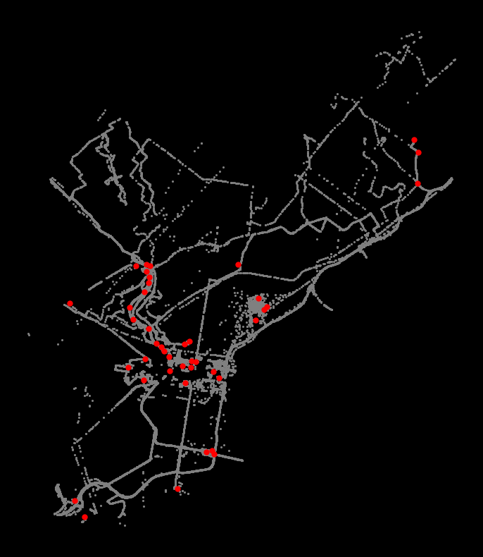
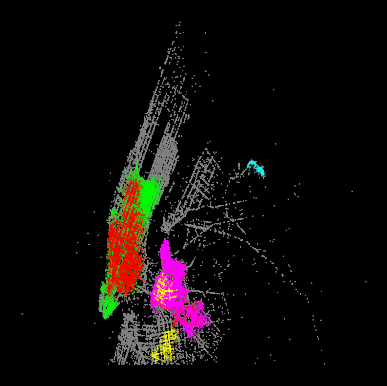
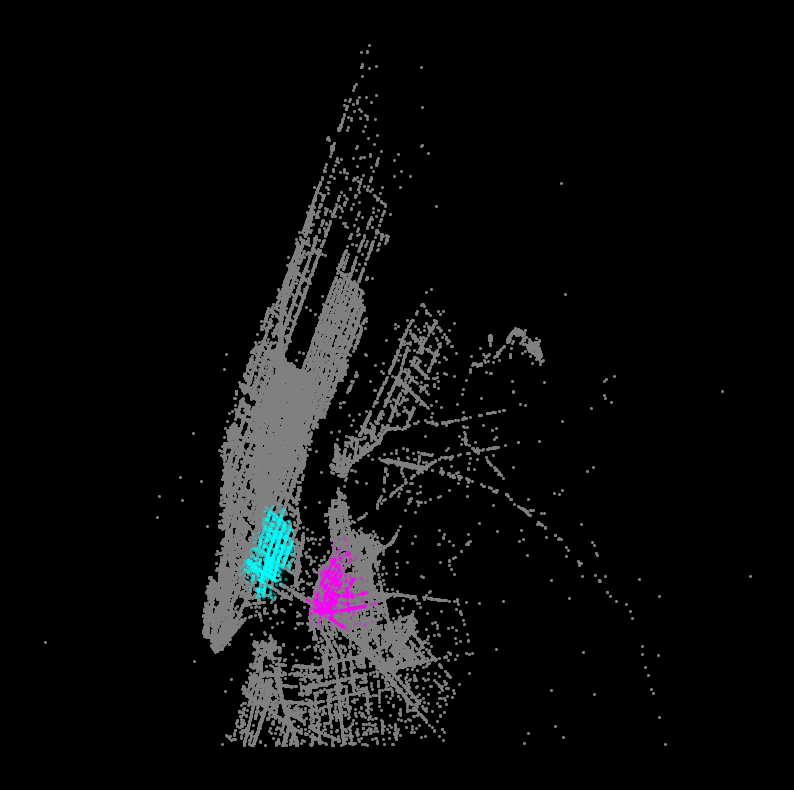

Show Code
from matplotlib import pyplot as plt
import numpy as np
import pandas as pd
import geopandas as gpd
np.random.seed(42)from matplotlib import pyplot as plt
import numpy as np
import pandas as pd
import geopandas as gpd
np.random.seed(42)Now on to the more traditional view of “clustering”…
“Density-Based Spatial Clustering of Applications with Noise”

min_samples = 4.min_samples (4) points (including the point itself) within a distance of eps from each of these points.eps) from the core points so they are part of the clustermin_pts within a distance of eps so they are not core pointseps from any of the cluster pointsHigher min_samples or a lower eps requires a higher density necessary to form a cluster.
Download the data from here.
Data extracted from the set of 1 billion GPS traces from OSM.
CRS is EPSG=3857 — x and y in units of meters
coords = gpd.read_file('./data/osm_gps_philadelphia.geojson')
coords.head()| x | y | geometry | |
|---|---|---|---|
| 0 | -8370750.5 | 4865303.0 | POINT (-8370750.5 4865303) |
| 1 | -8368298.0 | 4859096.5 | POINT (-8368298 4859096.5) |
| 2 | -8365991.0 | 4860380.0 | POINT (-8365991 4860380) |
| 3 | -8372306.5 | 4868231.0 | POINT (-8372306.5 4868231) |
| 4 | -8376768.5 | 4864341.0 | POINT (-8376768.5 4864341) |
num_points = len(coords)
print(f"Total number of points = {num_points}")Total number of points = 52358from sklearn.cluster import dbscan dbscan?Signature: dbscan( X, eps=0.5, *, min_samples=5, metric='minkowski', metric_params=None, algorithm='auto', leaf_size=30, p=2, sample_weight=None, n_jobs=None, ) Docstring: Perform DBSCAN clustering from vector array or distance matrix. Read more in the :ref:`User Guide <dbscan>`. Parameters ---------- X : {array-like, sparse (CSR) matrix} of shape (n_samples, n_features) or (n_samples, n_samples) A feature array, or array of distances between samples if ``metric='precomputed'``. eps : float, default=0.5 The maximum distance between two samples for one to be considered as in the neighborhood of the other. This is not a maximum bound on the distances of points within a cluster. This is the most important DBSCAN parameter to choose appropriately for your data set and distance function. min_samples : int, default=5 The number of samples (or total weight) in a neighborhood for a point to be considered as a core point. This includes the point itself. metric : str or callable, default='minkowski' The metric to use when calculating distance between instances in a feature array. If metric is a string or callable, it must be one of the options allowed by :func:`sklearn.metrics.pairwise_distances` for its metric parameter. If metric is "precomputed", X is assumed to be a distance matrix and must be square during fit. X may be a :term:`sparse graph <sparse graph>`, in which case only "nonzero" elements may be considered neighbors. metric_params : dict, default=None Additional keyword arguments for the metric function. .. versionadded:: 0.19 algorithm : {'auto', 'ball_tree', 'kd_tree', 'brute'}, default='auto' The algorithm to be used by the NearestNeighbors module to compute pointwise distances and find nearest neighbors. See NearestNeighbors module documentation for details. leaf_size : int, default=30 Leaf size passed to BallTree or cKDTree. This can affect the speed of the construction and query, as well as the memory required to store the tree. The optimal value depends on the nature of the problem. p : float, default=2 The power of the Minkowski metric to be used to calculate distance between points. sample_weight : array-like of shape (n_samples,), default=None Weight of each sample, such that a sample with a weight of at least ``min_samples`` is by itself a core sample; a sample with negative weight may inhibit its eps-neighbor from being core. Note that weights are absolute, and default to 1. n_jobs : int, default=None The number of parallel jobs to run for neighbors search. ``None`` means 1 unless in a :obj:`joblib.parallel_backend` context. ``-1`` means using all processors. See :term:`Glossary <n_jobs>` for more details. If precomputed distance are used, parallel execution is not available and thus n_jobs will have no effect. Returns ------- core_samples : ndarray of shape (n_core_samples,) Indices of core samples. labels : ndarray of shape (n_samples,) Cluster labels for each point. Noisy samples are given the label -1. See Also -------- DBSCAN : An estimator interface for this clustering algorithm. OPTICS : A similar estimator interface clustering at multiple values of eps. Our implementation is optimized for memory usage. Notes ----- For an example, see :ref:`examples/cluster/plot_dbscan.py <sphx_glr_auto_examples_cluster_plot_dbscan.py>`. This implementation bulk-computes all neighborhood queries, which increases the memory complexity to O(n.d) where d is the average number of neighbors, while original DBSCAN had memory complexity O(n). It may attract a higher memory complexity when querying these nearest neighborhoods, depending on the ``algorithm``. One way to avoid the query complexity is to pre-compute sparse neighborhoods in chunks using :func:`NearestNeighbors.radius_neighbors_graph <sklearn.neighbors.NearestNeighbors.radius_neighbors_graph>` with ``mode='distance'``, then using ``metric='precomputed'`` here. Another way to reduce memory and computation time is to remove (near-)duplicate points and use ``sample_weight`` instead. :func:`cluster.optics <sklearn.cluster.optics>` provides a similar clustering with lower memory usage. References ---------- Ester, M., H. P. Kriegel, J. Sander, and X. Xu, `"A Density-Based Algorithm for Discovering Clusters in Large Spatial Databases with Noise" <https://www.dbs.ifi.lmu.de/Publikationen/Papers/KDD-96.final.frame.pdf>`_. In: Proceedings of the 2nd International Conference on Knowledge Discovery and Data Mining, Portland, OR, AAAI Press, pp. 226-231. 1996 Schubert, E., Sander, J., Ester, M., Kriegel, H. P., & Xu, X. (2017). :doi:`"DBSCAN revisited, revisited: why and how you should (still) use DBSCAN." <10.1145/3068335>` ACM Transactions on Database Systems (TODS), 42(3), 19. File: ~/mambaforge/envs/musa-550-fall-2023/lib/python3.10/site-packages/sklearn/cluster/_dbscan.py Type: function
# some parameters to start with
eps = 100 # in meters
min_samples = 50
cores, labels = dbscan(coords[["x", "y"]], eps=eps, min_samples=min_samples)The function returns two objects, which we call cores and labels. cores contains the indices of each point which is classified as a core.
# The first 5 elements
cores[:5]array([1, 2, 4, 6, 8])The length of cores tells you how many core samples we have:
num_cores = len(cores)
print(f"Number of core samples = {num_cores}")Number of core samples = 29655The labels tells you the cluster number each point belongs to. Those points classified as noise receive a cluster number of -1:
# The first 5 elements
labels[:5]array([-1, 0, 0, -1, 1])The labels array is the same length as our input data, so we can add it as a column in our original data frame
# Add our labels to the original data
coords['label'] = labelscoords.head()| x | y | geometry | label | |
|---|---|---|---|---|
| 0 | -8370750.5 | 4865303.0 | POINT (-8370750.5 4865303) | -1 |
| 1 | -8368298.0 | 4859096.5 | POINT (-8368298 4859096.5) | 0 |
| 2 | -8365991.0 | 4860380.0 | POINT (-8365991 4860380) | 0 |
| 3 | -8372306.5 | 4868231.0 | POINT (-8372306.5 4868231) | -1 |
| 4 | -8376768.5 | 4864341.0 | POINT (-8376768.5 4864341) | 1 |
The number of clusters is the number of unique labels minus one (because noise has a label of -1)
num_clusters = coords['label'].nunique() - 1
print(f"number of clusters = {num_clusters}")number of clusters = 42We can group by the label column to get the size of each cluster:
cluster_sizes = coords.groupby('label', as_index=False).size()
cluster_sizes| label | size | |
|---|---|---|
| 0 | -1 | 19076 |
| 1 | 0 | 17763 |
| 2 | 1 | 4116 |
| 3 | 2 | 269 |
| 4 | 3 | 2094 |
| 5 | 4 | 131 |
| 6 | 5 | 127 |
| 7 | 6 | 116 |
| 8 | 7 | 2077 |
| 9 | 8 | 225 |
| 10 | 9 | 1051 |
| 11 | 10 | 260 |
| 12 | 11 | 765 |
| 13 | 12 | 131 |
| 14 | 13 | 110 |
| 15 | 14 | 300 |
| 16 | 15 | 137 |
| 17 | 16 | 591 |
| 18 | 17 | 387 |
| 19 | 18 | 274 |
| 20 | 19 | 154 |
| 21 | 20 | 294 |
| 22 | 21 | 71 |
| 23 | 22 | 154 |
| 24 | 23 | 74 |
| 25 | 24 | 106 |
| 26 | 25 | 135 |
| 27 | 26 | 86 |
| 28 | 27 | 277 |
| 29 | 28 | 134 |
| 30 | 29 | 90 |
| 31 | 30 | 102 |
| 32 | 31 | 57 |
| 33 | 32 | 51 |
| 34 | 33 | 83 |
| 35 | 34 | 50 |
| 36 | 35 | 50 |
| 37 | 36 | 78 |
| 38 | 37 | 53 |
| 39 | 38 | 68 |
| 40 | 39 | 50 |
| 41 | 40 | 91 |
| 42 | 41 | 50 |
# All points get assigned a cluster label (-1 reserved for noise)
cluster_sizes['size'].sum() == num_pointsTrueThe number of noise points is the size of the cluster with label “-1”:
num_noise = cluster_sizes.iloc[0]['size']
print(f"number of noise points = {num_noise}")number of noise points = 19076If points aren’t noise or core samples, they must be edges:
num_edges = num_points - num_cores - num_noise
print(f"Number of edge points = {num_edges}")Number of edge points = 3627x and mean y value for each cluster# Setup figure and axis
f, ax = plt.subplots(figsize=(10, 10), facecolor="black")
# Plot the noise samples in grey
noise = coords.loc[coords["label"] == -1]
ax.scatter(noise["x"], noise["y"], c="grey", s=5, linewidth=0)
# Loop over each cluster number
for label_num in range(0, num_clusters):
# Extract the samples with this label number
this_cluster = coords.loc[coords["label"] == label_num]
# Calculate the mean (x,y) point for this cluster in red
x_mean = this_cluster["x"].mean()
y_mean = this_cluster["y"].mean()
# Plot this centroid point in red
ax.scatter(x_mean, y_mean, linewidth=0, color="red")
# Format
ax.set_axis_off()
ax.set_aspect("equal")
DBSCAN can perform high-density clusters from more than just spatial coordinates, as long as they are properly normalized
I’ve extracted data for taxi pickups or drop offs occurring in the Williamsburg neighborhood of NYC from the NYC taxi open data.
Includes data for: - Pickup/dropoff location - Fare amount - Trip distance - Pickup/dropoff hour
Goal: identify clusters of similar taxi rides that are not only clustered spatially, but also clustered for features like hour of day and trip distance
Inspired by this CARTO blog post
See the data/williamsburg_taxi_trips.csv file in this week’s repository.
taxi = pd.read_csv("./data/williamsburg_taxi_trips.csv")
taxi.head()| tpep_pickup_datetime | tpep_dropoff_datetime | passenger_count | trip_distance | pickup_x | pickup_y | dropoff_x | dropoff_y | fare_amount | tip_amount | dropoff_hour | pickup_hour | |
|---|---|---|---|---|---|---|---|---|---|---|---|---|
| 0 | 2015-01-15 19:05:41 | 2015-01-15 19:20:22 | 2 | 7.13 | -8223667.0 | 4979065.0 | -8232341.0 | 4970922.0 | 21.5 | 4.50 | 19 | 19 |
| 1 | 2015-01-15 19:05:44 | 2015-01-15 19:17:44 | 1 | 2.92 | -8237459.0 | 4971133.5 | -8232725.0 | 4970482.5 | 12.5 | 2.70 | 19 | 19 |
| 2 | 2015-01-25 00:13:06 | 2015-01-25 00:34:32 | 1 | 3.05 | -8236711.5 | 4972170.5 | -8232267.0 | 4970362.0 | 16.5 | 5.34 | 0 | 0 |
| 3 | 2015-01-26 12:41:15 | 2015-01-26 12:59:22 | 1 | 8.10 | -8222485.5 | 4978445.5 | -8233442.5 | 4969903.5 | 24.5 | 5.05 | 12 | 12 |
| 4 | 2015-01-20 22:49:11 | 2015-01-20 22:58:46 | 1 | 3.50 | -8236294.5 | 4970916.5 | -8231820.5 | 4971722.0 | 12.5 | 2.00 | 22 | 22 |
len(taxi)223722We will focus on the following columns: - pickup_x and pickup_y - dropoff_x and dropoff_y - trip_distance - pickup_hour
Use the StandardScaler to normalize these features.
feature_columns = [
"pickup_x",
"pickup_y",
"dropoff_x",
"dropoff_y",
"trip_distance",
"pickup_hour",
]
features = taxi[feature_columns].copy()features.head()| pickup_x | pickup_y | dropoff_x | dropoff_y | trip_distance | pickup_hour | |
|---|---|---|---|---|---|---|
| 0 | -8223667.0 | 4979065.0 | -8232341.0 | 4970922.0 | 7.13 | 19 |
| 1 | -8237459.0 | 4971133.5 | -8232725.0 | 4970482.5 | 2.92 | 19 |
| 2 | -8236711.5 | 4972170.5 | -8232267.0 | 4970362.0 | 3.05 | 0 |
| 3 | -8222485.5 | 4978445.5 | -8233442.5 | 4969903.5 | 8.10 | 12 |
| 4 | -8236294.5 | 4970916.5 | -8231820.5 | 4971722.0 | 3.50 | 22 |
from sklearn.preprocessing import StandardScaler# Scale these features
scaler = StandardScaler()
scaled_features = scaler.fit_transform(features)
scaled_featuresarray([[ 3.35254171e+00, 2.18196697e+00, 8.59345108e-02,
1.89871932e-01, -2.58698769e-03, 8.16908067e-01],
[-9.37728802e-01, -4.08167622e-01, -9.76176333e-02,
-9.77141849e-03, -2.81690985e-03, 8.16908067e-01],
[-7.05204353e-01, -6.95217705e-02, 1.21306539e-01,
-6.45086739e-02, -2.80981012e-03, -1.32713022e+00],
...,
[-1.32952083e+00, -1.14848599e+00, -3.37095821e-01,
-1.09933782e-01, -2.76011198e-03, 7.04063946e-01],
[-7.52953521e-01, -7.01094651e-01, -2.61571762e-01,
-3.00037860e-01, -2.84530879e-03, 7.04063946e-01],
[-3.97090015e-01, -1.71084059e-02, -1.11647543e+00,
2.84810408e-01, -2.93269014e-03, 8.16908067e-01]])scaled_features_df = pd.DataFrame(scaled_features, columns=feature_columns)scaled_features_df.head()| pickup_x | pickup_y | dropoff_x | dropoff_y | trip_distance | pickup_hour | |
|---|---|---|---|---|---|---|
| 0 | 3.352542 | 2.181967 | 0.085935 | 0.189872 | -0.002587 | 0.816908 |
| 1 | -0.937729 | -0.408168 | -0.097618 | -0.009771 | -0.002817 | 0.816908 |
| 2 | -0.705204 | -0.069522 | 0.121307 | -0.064509 | -0.002810 | -1.327130 |
| 3 | 3.720070 | 1.979661 | -0.440583 | -0.272783 | -0.002534 | 0.026999 |
| 4 | -0.575488 | -0.479032 | 0.334734 | 0.553273 | -0.002785 | 1.155440 |
scaled_features_df.mean()pickup_x -5.582694e-14
pickup_y -5.503853e-14
dropoff_x -1.949372e-13
dropoff_y 2.937845e-14
trip_distance 1.071903e-18
pickup_hour -8.673676e-17
dtype: float64scaled_features_df.std()pickup_x 1.000002
pickup_y 1.000002
dropoff_x 1.000002
dropoff_y 1.000002
trip_distance 1.000002
pickup_hour 1.000002
dtype: float64print(scaled_features.shape)
print(features.shape)(223722, 6)
(223722, 6)eps and min_samples
eps of 0.25 and min_samples of 50Hint: If the algorithm is taking a long time to run (more than a few minutes), the eps is probably too big!
# Run DBSCAN
cores, labels = dbscan(scaled_features, eps=0.25, min_samples=50)
# Add the labels back to the original (unscaled) dataset
features['label'] = labels# Extract the number of clusters
num_clusters = features['label'].nunique() - 1
print(num_clusters)27# Same thing!
features["label"].max() + 127Group by the label, calculate and sort the sizes to find the label numbers of the top 5 largest clusters
N = features.groupby('label').size()
print(N)label
-1 101292
0 4481
1 50673
2 33277
3 24360
4 912
5 2215
6 2270
7 1459
8 254
9 519
10 183
11 414
12 224
13 211
14 116
15 70
16 85
17 143
18 76
19 69
20 86
21 49
22 51
23 97
24 52
25 41
26 43
dtype: int64# sort from largest to smallest
N = N.sort_values(ascending=False)
Nlabel
-1 101292
1 50673
2 33277
3 24360
0 4481
6 2270
5 2215
7 1459
4 912
9 519
11 414
8 254
12 224
13 211
10 183
17 143
14 116
23 97
20 86
16 85
18 76
15 70
19 69
24 52
22 51
21 49
26 43
25 41
dtype: int64# extract labels (ignoring label -1 for noise)
top5 = N.iloc[1:6]
top5label
0 4481
1 50673
2 33277
3 24360
4 912
dtype: int64top5_labels = top5.index.tolist()
top5_labels[0, 1, 2, 3, 4]To better identify trends in the top 5 clusters, calculate the mean trip distance and pickup_hour for each of the clusters.
# get the features for the top 5 labels
selection = features['label'].isin(top5_labels)
# select top 5 and groupby by the label
grps = features.loc[selection].groupby('label')
# calculate average pickup hour and trip distance per cluster
avg_values = grps[['pickup_hour', 'trip_distance']].mean()
avg_values| pickup_hour | trip_distance | |
|---|---|---|
| label | ||
| 0 | 18.599643 | 7.508730 |
| 1 | 20.127405 | 4.025859 |
| 2 | 1.699943 | 3.915581 |
| 3 | 9.536905 | 1.175154 |
| 4 | 1.381579 | 2.466414 |
Now visualize the top 5 largest clusters: - plot the dropoffs and pickups (same color) for the 5 largest clusters - include the “noise” samples, shown in gray
Hints: - For a given cluster, plot the dropoffs and pickups with the same color so we can visualize patterns in the taxi trips - A good color scheme for a black background is given below
# a good color scheme for a black background
colors = ['aqua', 'lime', 'red', 'fuchsia', 'yellow']# EXAMPLE: enumerating a list
for i, label_num in enumerate([0, 1, 2, 3, 4]):
print(f"i = {i}")
print(f"label_num = {label_num}")i = 0
label_num = 0
i = 1
label_num = 1
i = 2
label_num = 2
i = 3
label_num = 3
i = 4
label_num = 4# Setup figure and axis
f, ax = plt.subplots(figsize=(10, 10), facecolor="black")
# Plot noise in grey
noise = features.loc[features["label"] == -1]
ax.scatter(noise["pickup_x"], noise["pickup_y"], c="grey", s=5, linewidth=0)
# specify colors for each of the top 5 clusters
colors = ["aqua", "lime", "red", "fuchsia", "yellow"]
# loop over top 5 largest clusters
for i, label_num in enumerate(top5_labels):
print(f"Plotting cluster #{label_num}...")
# select all the samples with label equals "label_num"
this_cluster = features.loc[features["label"] == label_num]
# plot pickups
ax.scatter(
this_cluster["pickup_x"],
this_cluster["pickup_y"],
linewidth=0,
color=colors[i],
s=5,
alpha=0.3,
)
# plot dropoffs
ax.scatter(
this_cluster["dropoff_x"],
this_cluster["dropoff_y"],
linewidth=0,
color=colors[i],
s=5,
alpha=0.3,
)
# Display the figure
ax.set_axis_off()Plotting cluster #0...
Plotting cluster #1...
Plotting cluster #2...
Plotting cluster #3...
Plotting cluster #4...
Another good way to visualize the results is to explore the other clusters one at a time, plotting both the pickups and dropoffs to identify the trends.
Use different colors for pickups/dropoffs to easily identify them.
Make it a function so we can repeat it easily:
def plot_taxi_cluster(label_num):
"""
Plot the pickups and dropoffs for the input cluster label
"""
# Setup figure and axis
f, ax = plt.subplots(figsize=(10, 10), facecolor='black')
# Plot noise in grey
noise = features.loc[features['label']==-1]
ax.scatter(noise['pickup_x'], noise['pickup_y'], c='grey', s=5, linewidth=0)
# get this cluster
this_cluster = features.loc[features['label']==label_num]
# Plot pickups in fuchsia
ax.scatter(this_cluster['pickup_x'], this_cluster['pickup_y'],
linewidth=0, color='fuchsia', s=5, alpha=0.3)
# Plot dropoffs in aqua
ax.scatter(this_cluster['dropoff_x'], this_cluster['dropoff_y'],
linewidth=0, color='aqua', s=5, alpha=0.3)
# Display the figure
ax.set_axis_off()
plt.show()# plot specific label
plot_taxi_cluster(label_num=6)
.hvplot.scatter() function to plot the x/y pointsc= keyword as the column holding the cluster labelds.count_cat("label") — this will color the data points using our categorical color mapdatashade=True keyword to tell hvplot to use datashader# map colors to the top 5 cluster labels
color_key = dict(zip(top5_labels, ['aqua', 'lime', 'red', 'fuchsia', 'yellow']))
print(color_key){0: 'aqua', 1: 'lime', 2: 'red', 3: 'fuchsia', 4: 'yellow'}# extract the features for the top 5 clusters
top5_features = features.loc[features['label'].isin(top5_labels)]# !pip install datashaderimport hvplot.pandas
import datashader as ds
import geoviews as gv# Pickups using a categorical color map
pickups = top5_features.hvplot.scatter(
x="pickup_x",
y="pickup_y",
c="label",
aggregator=ds.count_cat("label"),
datashade=True,
cmap=color_key,
width=800,
height=600,
)
# Dropoffs using a categorical color map
dropoffs = top5_features.hvplot.scatter(
x="dropoff_x",
y="dropoff_y",
c="label",
aggregator=ds.count_cat("label"),
datashade=True,
cmap=color_key,
width=800,
height=600,
)
pickups * dropoffs * gv.tile_sources.CartoDarkNext time, regressions with scikit-learn!